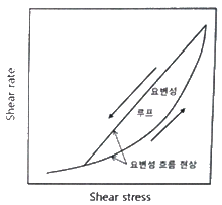
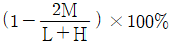
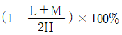
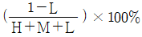
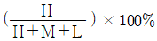
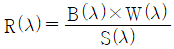
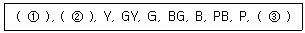

인쇄산업기사 (2013-08-18 기출문제)
1과목: 인쇄공학
1. 정지 액체의 자유표면이 고체면과 액체면에서 이루는 각으로 액체와 고체간의 계면장력에 의해 정해지고 그 종류에 따라 다르다. 이것을 무엇이라고 하는가?
- 접촉각
- 유화각
- 점탄성
- 예사성
(정답률: 알수없음)

2. 인쇄잉크의 전이 현상을 과학적으로 해석하려는 시도는 많이 있다. 그 중 전이방정식을 처음 제안한 사람은?
- Walker-Fetsko
- Zettlemoyer
- Ichikawa
- Rupp
(정답률: 알수없음)
3. 양장제책에 있어 등에 가로로 몇 개의 줄이 도드라져 나온 것을 무엇이라 하는가?
- 돋음띠
- 머리띠
- 동정
- 귀받이
(정답률: 알수없음)
4. 일정 모양으로 접는 금을 만드는 지기 공정은?
- stamping
- creasing
- die cutting
- waxing
(정답률: 알수없음)
5. 아트지로 화보집을 인쇄하고 인쇄물을 확대경으로 보니 일부 부분에 망점이 두 개로 겹쳐져서 인쇄화상이 선명하지 않았다. 다음 중 원인이 아닌 것은?
- 유니트별 통꾸밈이 불량하다.
- 실린더 그리퍼(gripper)조정이 잘못 되었다.
- 잉크의 택이 낮다.
- 블랭킷이 불량하게 조여졌다.
(정답률: 알수없음)
6. 인쇄판 혹은 블랭킷 표면에 이물질이 붙어서 부위가 윤곽상태로 화선이 빠지는 현상은?
- 모틀링(Mottling)
- 콜렉팅(Collecting)
- 케이킹(Caking)
- 히키(Hicky)
(정답률: 알수없음)
7. 매엽오프셋 인쇄에서 2매 급지의 원인이 아닌 것은?
- 흡착반(sucker)부의 조정불량
- 횡목과 종목의 바뀜
- 정정기 발생
- 재단시 종이 붙음
(정답률: 알수없음)
8. 다음 그림은 요변성 그래프이다. 그림과 같이 힘을 가할 때 나타나는 곡선과 힘이 제거될 때 나타나는 곡선이 다른 이유 중 맞는 것은?

- 잉크는 매우 작은 입자의 안료로 되어 있고 여러 가지 첨가제에 용해되어 있기 때문이다.
- 잉크 내의 안료와 첨가제는 3차원 망상구조를 갖기 때문이다.
- 잉크내 안료와 비히클의 계면에 강한 힘이 작용하면 구조가 파괴되어 복구되지 않기 때문이다.
- 잉크통에서 바로 꺼낸 잉크는 유동성이 풍부하나 외력이 가해지면 유동성이 급속도로 줄어든다.
(정답률: 알수없음)
9. 망점 면적율이 75%인 인쇄물의 하프톤 값(Halftone value)은?
- 25%
- 75%
- 125%
- 175%
(정답률: 알수없음)
10. 같은 습도를 유지하는 실내에서 온도가 내려가면 상대습도는 어떻게 변하는가?
- 점점 상승한다.
- 점점 하락한다.
- 급격히 하락한다.
- 변화가 없다.
(정답률: 알수없음)
11. 다음 중 인쇄실의 공기조화 시설을 효율적으로 처리하는 것과 관계가 먼 것은?
- 조명관리상 북쪽에 창을 만듦
- 인쇄실 입구는 출입이 용이하게 단일문으로 설계
- 공장내부의 기압을 고려하여 환기팬 설계
- 바닥 재료는 충분한 방수가공 처리
(정답률: 알수없음)
12. 처음 인쇄한 인쇄물의 농도가 1.0, 두 번재 인쇄물의 농도는 0.8, 중첩된 인쇄물의 색 농도가 1.2 일 경우 트래핑 효율은?
- 0%
- 25%
- 50%
- 75%
(정답률: 알수없음)
13. 윤전오프셋 인쇄의 건조에 대한 설명으로 틀린 것은?
- 종이를 가열하여 잉크속의 용제를 증발시켜 잉크를 건조시킨다.
- 도시가스나 프로판 가스를 연소시켜 고온의 공기를 만들어 노즐에 의해 고속으로 종이면에 불어 잉크를 건조시킨다.
- 건조된 배기 기체 속에는 잉크 용제 외 악취의 원인이 되는 물질이 있으므로 탈취하여야 한다.
- 주로 카본촉매를 사용한다.
(정답률: 알수없음)
14. 인쇄물 표지의 표면 가공용으로 쓰이지 않는 재질은?
- 나일론
- 폴리프로필렌
- 폴리에스테르
- 폴리염화비닐
(정답률: 알수없음)
15. 오프셋 매엽 4도 인쇄기로 망점으로 구성된 청색(Blue) 부분에 인쇄얼룩(Mottle)이 발생하였다. 이의 원인이 아닌 것은? (단, 인쇄순서 : C → M → Y → K 이다.)
- 인쇄용지의 코팅층 불균일
- 축임물의 과잉
- 저점도 잉크의 사용
- 고농도 마젠타 잉크 사용
(정답률: 알수없음)
16. 컬러인쇄시 색상을 컨트롤 하기 위해 그레이 밸런스(등가무채색농도/Gray balance)를 관리한다. 다음 중 그레이 밸런스와 관계가 없는 것은?
- 원래 잉크의 색상
- 잉크량
- 도트게인
- 원고
(정답률: 알수없음)
17. 트래핑에서 잉크 표면이 딱딱해져 결정화(crystallization)를 발생시키는 물질이 아닌 것은?
- 코발트
- 망간
- 건조촉진제
- 피자마유
(정답률: 알수없음)
18. 인쇄물의 표면에 광택을 주기 위하여 첨가한 바니쉬 등에 의하여 표면이 매끈해지는 상태를 무엇이라 하는가?
- 틴팅
- 유화
- 뜯김
- 크리스탈리제이션
(정답률: 알수없음)
19. 다음의 잉크 중 요변성(thixotrophy)이 가장 큰 잉크는?
- 그라비어 잉크
- 플렉소 잉크
- 평판 오프셋 잉크
- 잉크 젯 잉크
(정답률: 알수없음)
20. 인쇄실의 환경이 작업효율에 영향을 주는 3가지 중요한 요소가 아닌 것은?
- 온,습도의 영향
- 공기의 청정
- 환경의 정리
- 작업자의 심리
(정답률: 알수없음)
2과목: 인쇄재료학
21. 종이의 섬유 및 조직의 상태가 인쇄실의 환경과 같게 안정된 상태로 만들어 주는 작업을 무엇이라 하는가?
- 시즈닝
- 히스테리시스
- 파일링
- 비팅
(정답률: 알수없음)
22. 프로세스 잉크 중 가장 이상적인 반사율을 가진 잉크는?
- Magenta
- Cyan
- Yellow
- Green
(정답률: 알수없음)
23. 할로겐화은의 감색성 중 분광감도가 650nm 까지 확장된 파장역을 가지는 것은?
- 레귤러
- 오르토크로매틱
- 팬크로매틱
- 적외형
(정답률: 알수없음)
24. 트래핑 불량에 대한 해결방법으로 적절하지 않은 것은?
- 겹 인쇄 잉크의 택(tack)을 적게 한다.
- 처음 인쇄에서 뒤묻음 방지 스프레이이 사용을 줄인다.
- 겹 인쇄잉크에 코발트 건조제를 사용한다.
- 처음 인쇄잉크의 택을 크게 한다.
(정답률: 알수없음)
25. 정착액은 일반적으로 pH가 4.6 ~ 5.4 정도가 좋다. 이 때 pH유지의 완충제로 사용되는 약품은?
- 명반
- 붕산
- 티오황산나트륨
- 티오황산암모늄
(정답률: 알수없음)
26. 제지 공정에서 섬유의 표면 및 내부에 기계적 충격으로 상처를 내어 섬유 간의 결합 확률을 높이고 섬유의 유연성을 증가시키는 작업 공정은?
- 초지
- 고해
- 사이징
- 압착
(정답률: 알수없음)
27. 할로겐화은 감광재료의 유제 중에 600nm 이상의 빛에 잘 감광되지 않아 적색의 안전광을 사용하는 유제는?
- 레귤러형 유제
- 오르토크로매틱형 유제
- 팬크로매틱형 유제
- 적외형 유제
(정답률: 알수없음)
28. 다음 중 잉코미터(Inko-meter)로 주로 시험하는 항목은?
- 끈기(tack)
- 건조속도
- 내광성
- 내산성
(정답률: 알수없음)
29. 다음 중 화학펄프에 속하지 않는 것은?
- 아황산 펌프
- 쇄목 펄프
- 소다 펄프
- 크라프트 펄프
(정답률: 알수없음)
30. 다음 중 CTP용 레이저의 파장을 잘못 나타낸 것은?
- 아르곤 레이저 - 488nm
- 헬륨네온 레이저 - 633nm
- 강화 YAG 레이저 - 332nm
- 적외선 레이저 다이오드 - 760nm
(정답률: 알수없음)
31. 산화철 분말을 주성분으로 하는 특수용도의 잉크는?
- 수성잉크
- 자성잉크
- 발포잉크
- 형광잉크
(정답률: 알수없음)
32. 나이트렌(nitrene)이 노볼락(novolac)과 같은 알칼리 가용성 수지와 반응하여 알칼리에 녹기 어려운 내알칼리성의 내식막을 만드는 감광재료는?
- 중크롬산 감광재료
- 아지드형 감광재료
- 폴리계피산비닐계 감광재료
- PVA 감광재료
(정답률: 알수없음)
33. 다음 중 축임물에 알코올(IPA)을 넣는 주된 이유는?
- 축임물을 냉각시킨다.
- 축임물을 살균한다.
- 잉크의 유화를 촉진시킨다.
- 표면장력을 낮춘다.
(정답률: 알수없음)
34. 종이에 잉크나 물의 침투 저항성을 주는 작업을 무엇이라 하는가?
- 고해
- 초지
- 사이징
- 건조
(정답률: 알수없음)
35. 진주 광택을 내는 안료로서 즉석복원 등의 인쇄 숫자를 가리기 위하여 사용하는 잉크는 어떤 종류인가?
- 프로세스 잉크
- 별색 잉크
- 형광 잉크
- 펄 잉크
(정답률: 알수없음)
36. 다음 중 산화중합 건조에 대한 설명으로 옳지 않은 것은?
- 축임물의 유화가 건조를 지연시킨다.
- 습도가 높아질수록 건조가 느려진다.
- 인산이나 인산염이 다량 들어가면 건조가 빨라진다.
- 종이 면이 산성일수록 건조가 늦어진다.
(정답률: 알수없음)
37. 사진 감광재료로 사용되는 할로겐화은 중에서 감도가 가장 높은 것은?
- AgF
- AgCl
- AgBr
- AgI
(정답률: 알수없음)
38. 기름과 물이 미세한 방울로 섞이는 현상을 무엇이라 하는가?
- 모틀링
- 유화
- 블로킹
- 초킹
(정답률: 알수없음)
39. 제판공정이 끝난 후 내마모성, 내용제성과 같은 내쇄력을 향상시킬 목적으로 처리하는 공정은?
- 정면 처리
- 수세 처리
- 버닝 처리
- 탈지 처리
(정답률: 알수없음)
40. 도공지(코팅지)의 특성에 대한 설명으로 가장 거리가 먼 것은?
- 공극의 평균 크기는 약 1㎛ 내외이다.
- 도공층 내로 안료의 침투가 어렵다.
- 도공층에 관상으로 된 구조가 존재한다.
- 모세관을 통해서 공기가 반대 면으로 투과한다.
(정답률: 알수없음)
3과목: 인쇄색채학
41. 무채색에서 반사율이 약 30% 정도인 경우의 색은?
- 흰색
- 회색
- 검정색
- 파란색
(정답률: 알수없음)
42. 전자파의 파장이 가장 짧은 것부터 긴 순서로 옳게 나열된 것은?
- 자외선 - X선 - 가시광선 - 원적외선
- X선 - 가시광선 - 원적외선 - 자외선
- 가시광선 - X선 - 자외선 - 원적외선
- X선 - 자외선 - 가시광선 - 원적외선
(정답률: 알수없음)
43. 일반적으로 후퇴색이 지니는 조건으로 가장 거리가 먼 것은?
- 빨간색보다 파란색이 후퇴의 느낌이 강하다.
- 밝은 색이 어두운 색보다 후퇴의 느낌을 준다.
- 따뜻한 색보다 차가운 색이 후퇴의 느낌을 준다.
- 채도가 낮은 색이 채도가 높은 색보다 후퇴의 느낌이 강하다.
(정답률: 알수없음)
44. Yellow와 Magenta 잉크를 혼합하면 이론적으로 어떤 빛이 반사되는가?
- Red
- Green
- Blue
- Cyan
(정답률: 알수없음)
45. 규정의 색필터에 의하여 어떤 잉크의 색농도를 측정한 결과 최고 농도를 H, 중간농도를 M, 최저농도를 L이라 하면 이 잉크의 색상효율은 어떻게 나타내는가?




(정답률: 알수없음)
46. 다음 중 시료의 절대분광반사율을 구하는 식으로 옳게 나타낸 것은? (단, R(λ)은 절대분광반사율, S(λ)는 시료의 측정시그널, B(λ)는 base line calibration factor, W(λ)는 백색표준의 절대분광반사율 값이다.)
- R(λ) = S(λ) × B(λ) × W(λ)
- R(λ) = S(λ) + B(λ) + W(λ)
- R(λ) = S(λ) - B(λ) - W(λ)

(정답률: 알수없음)
47. 먼셀(Munsell)의 10색상이 다음과 같을 때 ( ) 안의 ①, ②, ③에 들어 갈 색상으로 옳은 것은?

- ① R, ② RR, ③ PP
- ① R, ② YR, ③ RP
- ① N, ② YN, ③ NP
- ① W, ② YW, ③ WP
(정답률: 알수없음)
48. 어떤 색을 보고 있다가 다른 색을 볼 때 먼저 본 색의 영향으로 다음에 보이는 색이 다르게 보이는 현상은?
- 면적대비
- 계시대비
- 연변대비
- 한난대비
(정답률: 알수없음)
49. 다음 중 셔브뢸의 유사 조화에 해당되지 않는 것은?
- 명도에 따른 조화
- 채도에 따른 조화
- 색상에 따른 조화
- 주조색에 따른 조화
(정답률: 알수없음)
50. 물리적으로 분광 반사율의 고저(高低)를 말하는 것은?
- Value
- Hue
- Saturation
- Chroma
(정답률: 알수없음)
51. 오스트발트 표색계의 기본이 되는 색채(related color)에 해당되지 않는 것은?
- 색상(H)
- 검정(B)
- 흰색(W)
- 순색(C)
(정답률: 알수없음)
52. 분광반사율 측정방식에 따른 배치가 바르게 연결된 것은?
- Polychromatic 방식 : 광원-광검출기-시료-분광장치
Monochromatic 방식 : 광원-광검출기-분광장치-시료 - Polychromatic 방식 : 광원-시료-광검출기-분광장치
Monochromatic 방식 : 광원-시료-분광장치-광검출기 - Polychromatic 방식 : 광원-시료-분광장치-광검출기
Monochromatic 방식 : 광원-분광장치-시료-광검출기 - Polychromatic 방식 : 광원-분광장치-시료-광검출기
Monochromatic 방식 : 광원-시료-분광장치-광검출기
(정답률: 알수없음)
53. 다음 중 먼셀의 색상환에 대한 설명이 아닌 것은?
- 5색을 기준으로 하여 10색으로 분할시켰다.
- 명도 단계는 N1, N2, N3 ... 등으로 표시한다.
- 이상적인 흑색(Bk)과 백색(W)량을 표시한다.
- 채도는 중심의 무채색 축에서 수평으로 나간다.
(정답률: 알수없음)
54. 분광반사율의 불일치가 광원이나 관측자의 시감에 따라 색자극의 일치를 이루는 경우는?
- 색순응
- 색의 연색
- 색의 대비
- 조건등색
(정답률: 알수없음)
55. 어떤 색과 유사하다는 것에 따른 시각인식의 속성을 무엇이라 하는가?
- 색상
- 명도
- 채도
- 휘도
(정답률: 알수없음)
56. 녹색(Green) 인쇄물은 3원색 잉크 중에서 어떤 잉크들이 인쇄된 것인가? (단, Y :Yellow, M : Magenta, C : Cyan 이다.)
- C잉크와 Y잉크
- M잉크와 C잉크
- Y잉크와 M잉크
- C잉크와 M잉크 그리고 Y잉크
(정답률: 알수없음)
57. 다음 중 가시광선의 파장 영역을 가장 옳게 나타낸 것은?
- 380 ~ 780nm
- 780 ~ 880nm
- 580 ~ 980nm
- 680 ~ 1080nm
(정답률: 알수없음)
58. 색의 3속성을 3차원 공간에 계통적으로 배열한 것은?
- 색채계
- 색상환
- 표색계
- 색입체
(정답률: 알수없음)
59. 측색 장비의 측정 수치를 국가적 또는 세계적인 기준척도로 항상 읽혀지도록 조절하여 표준화하는 과정을 무엇이라 하는가?
- 검증
- 캘리브레이션
- 장치의 예열시간
- 광원의 조도
(정답률: 알수없음)
60. 먼셀 표색계의 표색 방법에 대한 설명으로 틀린 것은?
- 10개의 주 색상과 10단계의 명도로 구분하였다.
- 2진법 체계를 기초로 하였다.
- 3차원 색공간을 색상, 명도, 채도로 나누었다.
- HV/C로 표기한다.
(정답률: 알수없음)
4과목: 사진제판공학
61. 인쇄 화상의 계조 재현에서 명암의 대비 또는 대조를 표현하는 것을 무엇이라 하는가?
- 선예도
- 콘트라스트
- 선명도
- 그라데이션
(정답률: 알수없음)
62. 1×1 inch 의 이미지 원고를 2배로 확대하여 150 line / inch 로 인쇄하는 경우의 스캔 해상도는? (단, 망점계수는 2 이다.)
- 150 dpi
- 300 dpi
- 450 dpi
- 600 dpi
(정답률: 알수없음)
63. 컬러 스캐너에서 포토멀티플라이어(광전자증배관)는 주로 어떤 역할을 하는가?
- 샤프니스 수정 및 연산을 한다.
- 전기 신호로 색 수정과 계조 수정을 한다.
- 빛의 강약을 전기 신호로 바꾼다.
- 전자 신호의 강약에 따라 빛을 강약으로 바꾼다.
(정답률: 알수없음)
64. 스캐너에 사용되는 He-Ne 레이저의 출력감도 파장은 다음 중 어느 것인가?
- 488nm
- 514nm
- 633nm
- 780nm
(정답률: 알수없음)
65. 이미지 처리시 언샤프마스크(USM)를 잘못 적용했을 경우 나타나는 문제점이 아닌 것은?
- Halo
- Mottling
- Specking
- Sharpen
(정답률: 알수없음)
66. 교정의 종류 중 필름 분판을 포함하지 않으며, 도트게인 및 무아레 패턴을 정확하게 표현하지 못하는 교정은?
- 필름형 교정
- 인쇄 교정
- 디지털 교정
- CEPS 교정
(정답률: 알수없음)
67. 고열에서 기화하는 잉크를 도포한 전용시트에 서멀헤드로 열을 가해서 용지에 전사하는 방식으로, 컬러를 망점으로 재현하지 못하고 연속조로 재현하며, 전용 용지만을 사용하는 교정용 프린터는?
- 레이저 프린터
- 잉크젯 프린터
- 염료 승화형 프린터
- 버블젯 프린터
(정답률: 알수없음)
68. 편집된 출판물을 전자사진 방식으로 1페이지를 단위로 프린트하며 메커니즘은 전자복사와 거의 같으며 폰트와 그래픽을 주사하는 방식인 교정 방법은?
- 사진방식 교정
- 레이저빔방식 교정
- 열전사방식 교정
- 페이지프린트방식 교정
(정답률: 알수없음)
69. 전자출판에서 스크린 선수 175선의 망점을 출력할 때 입력 해상도는 얼마가 적당한가? (단, 사진 확대율은 100% 이다.)
- 87.5 dpi
- 175 dpi
- 350 dpi
- 700 dpi
(정답률: 알수없음)
70. 감광재료에서 사바티에 효과에 대한 설명으로 틀린 것은?
- 노출 및 현상에서 생긴 화상은 차광작용으로 발생한다.
- 색감효과(desensitizing effect) 때문에 발생한다.
- 현상 중 불안정한 안전등 아래에서 발생한다.
- 순수한 현상효과로써 코스틴스키 효과라고도 한다.
(정답률: 알수없음)
71. 컴퓨터 처리에 의하여 제판용 필름을 만드는 장치를 무엇이라 하는가?
- CTP
- CTF
- POD
- DTP
(정답률: 알수없음)
72. 컬러 스캐너에서 샤프니스를 강조하기 위하여 전기적으로 행하는 회로는?
- USM 회로
- 계조수정 회로
- USR 회로
- UCA 회로
(정답률: 알수없음)
73. 필름출력기의 전자식 망점발생기(electronic dot generator)로 출력되는 망점의 특징은?
- 연조 망점으로 망점수정이 잘 된다.
- 경조 망점으로 망점수정이 어렵다.
- 연조 망점으로 정물 사진에 적합하다.
- 경조 망점으로 현상관리가 어렵다.
(정답률: 알수없음)
74. 명실용 필름의 최대 분광감도 영역으로 가장 가까운 것은?
- 250nm 부근
- 300nm 부근
- 350nm 부근
- 400nm 부근
(정답률: 알수없음)
75. 다층평판에 대한 설명으로 옳지 않은 것은?
- 서로 다른 금속을 2~3층으로 도금한 것이다.
- 친유성 금속(구리)을 화선부로 한다.
- 친수성이 큰 금속(크롬, 알루미늄)을 비화선부로 하는 제판법이다.
- 감광재를 스폰지나 롤러로 도포하여 감광막을 형성한다.
(정답률: 알수없음)
76. 컬러 스캐너의 입력용 주사방식 중 전자적 평명 주사방식에 해당되는 것은?
- 원통회전 방식
- 갈바노미터 방식
- 회전다면경 방식
- 고체촬상소자(CCD) 방식
(정답률: 알수없음)
77. 피사체가 너무 밝아서 콘트라스트가 거의 없고 하이라이트와 섀도우 부분의 농도차가 작은 경우의 스캐닝용 원고(예: 눈 속의 흰공)를 무엇이라 하는가?
- 로우키 이미지(low-key image)
- 캐치 라이트 이미지(catch-light image)
- 하이키 이미지(high-key image)
- 라인 아트(line-art)
(정답률: 알수없음)
78. 노출량의 값은 어느 범위 내에서는 조도 및 노출 시간이 서로 역비례적으로 변화되어도 감광재료에 주는 효과에는 변함이 없이 농도를 일정하게 얻는 것을 무엇이라 하는가?
- 간헐효과
- 허셀효과
- 상반법칙
- 위사진효과
(정답률: 알수없음)
79. 그라비어 제판시 부식할 때 일어나는 결점의 하나로 섀도우 부분의 주위에 그 윤곽에 따라 밝은 무늬나 그림자가 생기는 현상을 무엇이라 하는가?
- 코팅(coating)
- 비네팅(vignetting)
- 헤일로(halo)
- 고스트이미지(ghost image)
(정답률: 알수없음)
80. 알루미늄판의 표면에 양극산화 처리를 함으로써 얻을 수 없는 것은?
- 친수성
- 보수성
- 신속성
- 내마모성
(정답률: 알수없음)